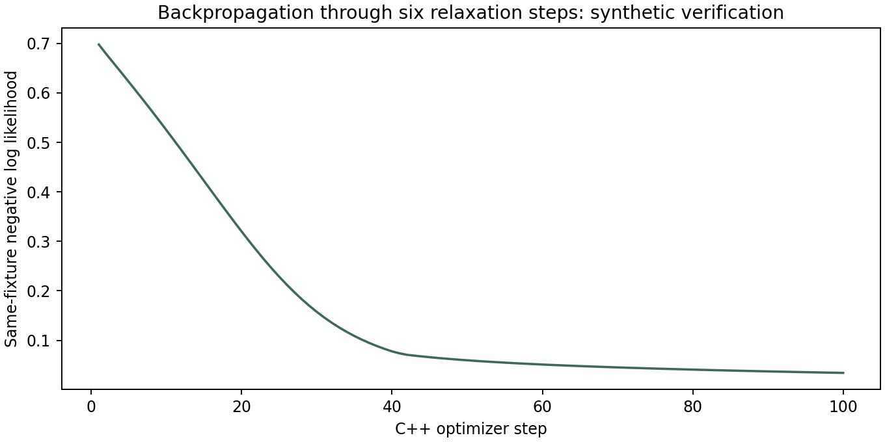

Michael Emanuel Glover’s framework now has a C++17 machine that learns unary evidence and shared compatibility rules by backpropagating through categorical relaxation.
Features → initial strengths → six shared relaxation steps → reference-label loss
Loss → reverse messages through every step → parameter gradients → bounded Adam update

This public figure verifies learning on a synthetic fixture. It uses the same four examples for training and checkpoint loss; it is not a held-out prediction result. The separate measured EOG evaluation and its fitted artifacts remain in local study outputs.
Ninety C++ finite-difference comparisons check every fixture parameter across several unroll depths and mixing values. Worst observed absolute error is about 1.5 × 10⁻¹⁰. An independent float64 PyTorch expression agrees with the C++ forward strengths, loss and gradients. Training itself runs in C++, without PyTorch.
The categorical update matches our existing CompatibilityField. Its unary evidence is injected at every iteration; its shared compatibility matrix receives gradients from every iteration. The implementation differentiates both that repeated evidence and the initial strengths.
RelaxationMachine model(2, 2, 6); Adam optimizer(model.parameters().size()); const auto error = model.loss_gradient(example); optimizer.update(model, error.gradient, .02);
Projected compatibility bounds retain a global contraction bound of at most .875 for the .5 mixing setting. This concerns fixed-input inference, not classification correctness. The real-data runner separates recordings, fits feature scaling on training only, selects checkpoints and thresholds on validation, and evaluates test recordings afterward. Scorer codes are never input features.
Equations, verification and data protocol · Small C++ lesson · C++ forward and backward passes · C++ training CLI · Independent checks · Synthetic gradient data · Source download